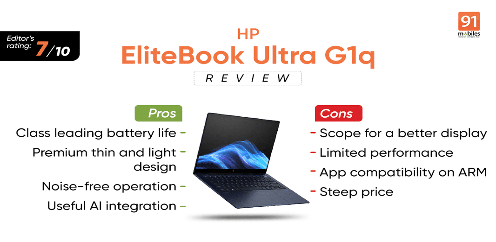

Enterprise laptops are usually not as exciting as consumer-grade ones, but that is not the case with HP’s EliteBook Ultra G1q. It’s a thin and light 14-inch premium ultrabook and a notable entry in the professional laptop market. HP has opted for Qualcomm’s ARM-based Snapdragon Elite X processor instead of the more conventional Intel or AMD chips.
This move towards Windows on ARM aims to provide significant gains in energy efficiency and battery life, addressing the needs of business professionals who demand a device that can stay powered throughout the day while delivering secure, reliable performance.
Here’s an inside look at the new HP EliteBook Ultra G1q.
The design of the HP EliteBook Ultra G1q is undoubtedly one of its key strengths. Built with business professionals in mind, it combines a sleek, minimalist aesthetic with the practical durability that users have come to expect from HP’s EliteBook line. The laptop has an aluminium chassis which feels premium yet remains light and portable, weighing around 1.34kgs. The compact profile ensures that it can slip easily into a briefcase or backpack, making it an ideal travel companion for frequent flyers or commuters.

Like most enterprise laptops there is a privacy shutter for the webcam, allowing users to physically block the camera for added security. The laptop’s facial recognition (Windows Hello) feature provides fast and secure login, making it a well-rounded device from a security perspective.
In terms of build quality, the EliteBook Ultra G1q adheres to MIL-STD-810H certification, which guarantees it can withstand a certain level of rough handling, vibrations, and temperature fluctuations. Having said that, the chassis isn’t super rugged which is primarily to cut down weight. I also noticed that the finish, although premium with its ‘Atmosphere Blue’ hue, tends to attract fingerprints. I would have loved to see a stiffer hinge for the display, but for an everyday office notebook, it feels good enough.
The laptop doesn’t offer much in terms of I/O as you only get a USB 3.2 Gen 2 Type-A port, two USB Type-C ports (one of which supports 40Gbps while the other is limited 10Gbps), and a 3.5mm audio jack. Wireless connectivity options include Wi-Fi 6E with Bluetooth 5.3 and there is an option for a Wi-Fi 7 chip listed on the company’s website.
The bottom has some rubber feet and a large section for ventilation, as well as the bottom-firing speakers. The cover is secured with just four screws, although you might need a torx screwdriver kit to undo them. Apart from the battery, you can replace the M.2 SSD and wireless card. The pre-installed PCIe Gen 4 SSD is nicely protected under copper shielding which should help keep the thermals in check.
The 14-inch IPS touch display on the EliteBook Ulta G1q comes at 2.2K (2,240 x 1,400) resolution. Despite the odd choice of resolution, it looks sharp and crisp. HP claims that the display can achieve a peak brightness of 300 nits which can feel a bit underwhelming, especially if you are using it outdoors.
Additionally, the panel offer 100 percent of the sRGB colour gamut, and while colours look good, it is nowhere close to the saturation or contrast that you get with an OLED screen. I was also disappointed to see a standard 60Hz refresh rate with average screen response times of 18-20ms.
I understand HP is targeting business professionals with the EliteBook Ulta G1q, who may not need high-end specifications when it comes to the display. But when you are charging consumers over Rs 1.5 lakhs, these shortcomings stick out more than they should when compared to a notebook priced lower.
The performance of the HP EliteBook Ultra G1q is where things get interesting—and, depending on the user’s needs, potentially problematic. Powered by Qualcomm’s Snapdragon X Elite ARM processor, the EliteBook G1q represents HP’s commitment to adopting ARM architecture, which promises better energy efficiency and longer battery life than traditional Intel or AMD processors.
There’s a single configuration for the EliteBook Ultra G1q which comes with integrated 16GB of LPDDR5x memory clocked at 8,400MT/s and a 512GB PCIe Gen 4 NVMe TLC M.2 SSD. While a user like me would prefer more storage, I was particularly happy to see HP offering a relatively fast (if not the fastest in its category) PCIe Gen 4 speeds for the SSD.
For basic productivity tasks like word processing, web browsing, and video conferencing, the chip performs admirably. The ARM architecture also excels in delivering a smooth, quiet experience as it doesn’t require ramping up the cooling fan at all times.
However, when it comes to more intensive workloads or software that relies heavily on x86 architecture, the ARM-based system shows its limitations. While native ARM apps work seamlessly, the laptop struggles with x86 applications running in emulation. Emulated software tends to run slower and less efficiently, resulting in performance bottlenecks for users who rely on such applications. This is especially problematic for professionals using industry-standard software like Adobe’s Creative Cloud, certain financial applications, or custom enterprise software that hasn’t been optimized for ARM.
This makes the EliteBook Ultra G1q a double-edged sword—while it excels in efficiency and basic tasks, power users who need robust performance may find the laptop’s limitations frustrating. Additionally, it lacks the horsepower for demanding tasks like 4K video editing or running virtual machines, areas where more traditional Intel or AMD laptops might excel.
Coming to synthetic benchmarks, the Snapdragon X Elite, specifically the X1E-78-100, is fairly competitive in both single and multi-core performance. Granted it is not the fastest, but the scores are not that far behind the M3 powered Apple MacBook Pro. In fact, the X Elite has an edge over Intel’s latest Lunar Lake based Core Ultra 7 258V that we recently tested on the ASUS ZenBook S 14.
Graphics performance is an area where the ARM-based chip struggles the most. The Adreno GPU cannot keep up with other integrated solutions from Intel and AMD when comparing GPU-based benchmarks. Similarly, if you are someone who likes to casually game during your break, this machine is not meant for you. Having said that, I could actually play GTA V at high settings where I got over 75FPS at 1200p resolution, with minor stuttering issues.
With the EliteBook Ultra G1q, HP is aiming to deliver newer experiences with its AI-integrated features. The laptop comes with presence sensing that can automatically lower the screen brightness when you look away, or lock the device when you move away. There are also additional features like AI noise reduction for audio input and output both of which work well during online meetings. Speaking of audio, the stereo speakers at the bottom are loud, but lack a bit of punch.
Additionally, the Poly Camera Pro app can enhance your virtual meetings with various tools at your disposal including image enhancement controls, resolution and aspect ratio controls, framing and more. It’s a great way to have a clean, distraction free environment during professional hours.
HP is also offering its own AI Companion tool with the EliteBook Ultra G1q. While it is still in beta, it can help in basic queries and problem-solving. For everything else, you do get Copilot+ in all its glory.
The HP EliteBook Ultra G1q is a thoughtfully designed laptop that excels in portability, battery life, and efficiency, making it an excellent choice for business professionals who need a reliable device for basic productivity tasks. The laptop’s premium build quality, comfortable keyboard, and long battery life make it well-suited for users who are frequently on the move or working in fast-paced environments.
However, the limitations of the Snapdragon X Elite processor and Windows on ARM’s software compatibility issues cannot be overlooked. While native ARM apps perform well, the lack of robust support for x86 applications, particularly in emulation, means this laptop may not be the best choice for power users or those relying on performance-intensive software. Additionally, the absence of certain connectivity options like an HDMI or Ethernet port might be a drawback for some professionals.
Therefore, its best fit is for professionals who work predominantly within the ARM ecosystem or need a device that can handle lighter workloads with exceptional battery life.